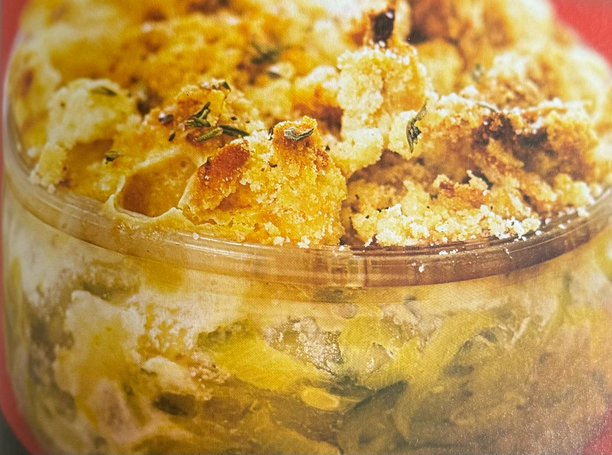

Crumble courgettes Boursin
Ingrédients
4×
- 3 courgettes
- 1 noisette de beurre
- 1 Boursin
- 75 g de beurre
- 75 g de farine
- 80 g de parmesan râpé
- 3 c. à s. de chapelure
- 1 c. à c. de thym

Préparation
Étape 1
Laver 3 courgettes et les éplucher en laissant une bande de peau sur deux. Les couper en rondelles et les laisser dégorger 3h.
Étape 2
Beurrer un plat avec 1 noisette de beurre, y répartir les courgettes et poivrer. Couvrir de 1 Boursin en fines rondelles.
Étape 3
Ramollir 75 g de beurre. Sabler avec 75 g de farine, 80 g de parmesan râpé, 3 c. à s. de chapelure et 1 c. à c. de thym. Répartir sur les courgettes.
Étape 4
Cuire 30min à 200ºC.
Résumé
3 courgettes
laisser dégorger
1 noisette de beurre
1 Boursin
Couvrir
75 g de beurre
75 g de farine
80 g de parmesan râpé
3 c. à s. de chapelure
1 c. à c. de thym
Sabler Répartir
Cuire 200ºC